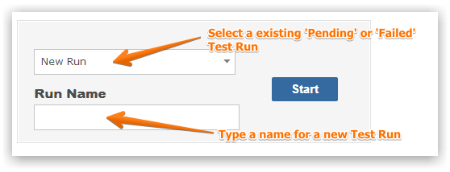
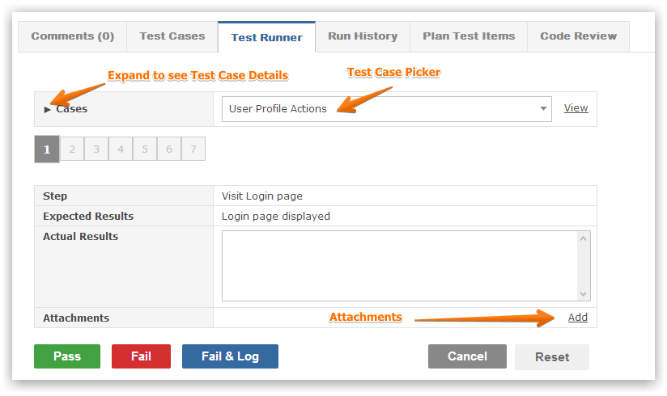
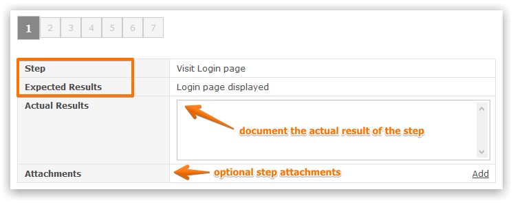
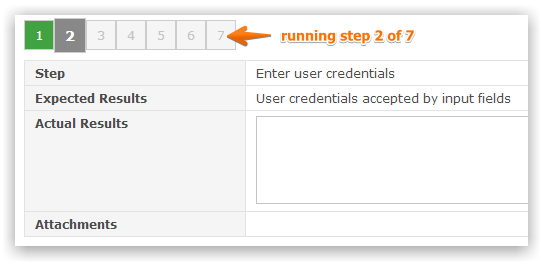
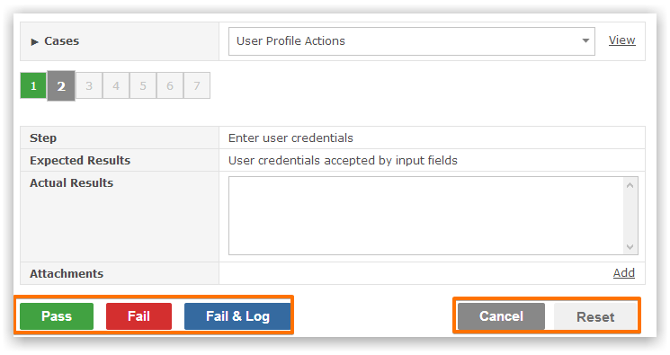
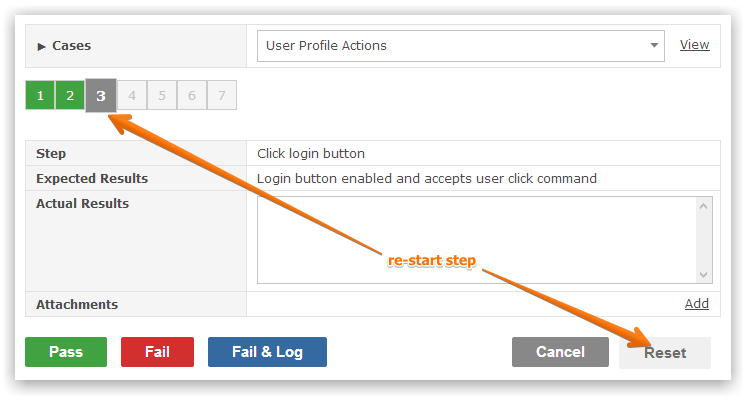
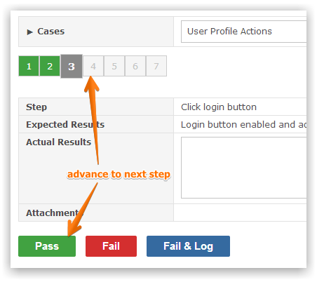
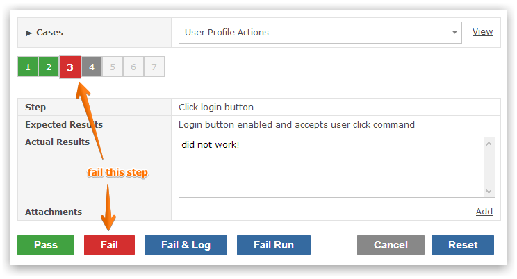
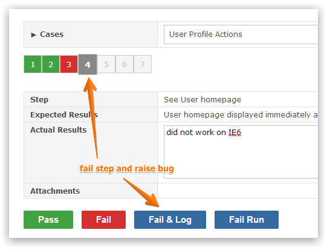
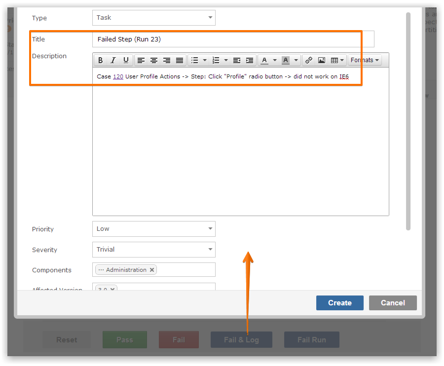

The goal is to run through every test case within a test plan and aim to achieve a PASS or FAIL.
Hence you run (or execute) test plans.
You can run a test plan multiple times and see what passed or failed.
You can resume an existing test run or start a new test run.

You execute each test case in sequence and can upload attachments such as screenshots, scripts or evidence of your test run.

Selecting a test case will then take you through each test case step.

Above every test step you can track your progress an move between the test steps.

In order to move to the next test step you need to mark the step as passed or failed.

Clicking the Reset button will restart the current step from the beginning.

Clicking the Pass button will advance you to the next step.

Clicking the Fail button will mark the current step as failed.

Clicking the Fail & Log button will mark the current step as failed and allow you to log a new item.

You can then proceed to provide details for the new item you wish to create (e.g. raise bug due to failed test step).

The following video outlines the base process of running tests within your Gemini installation.